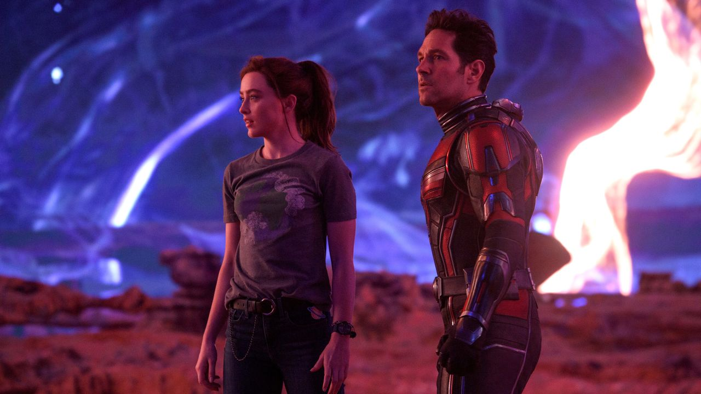

Desde su creación hacia finales de la década de los 30's, los superhéroes se han ganado el
corazón del mundo, teniendo a algunos de los personajes ficticios más icónicos en la cultura
popular moderna. Y en este blog les hablaremos acerca de los comentarios políticos, las
historias y controversias que rodean a estos personajes y sus historias, pero
principalmente, qué es lo que hace a estos seres tan especiales que los han llevado de ser
historias para nerds a los reyes de la cultura pop.
Desarrollo
Los superhéroes cumplen el propósito que los mitos y leyendas cumplían en el antepasado,
crear un mundo lleno de héroes y personajes más grandes que la vida misma, que serían
capaces de levantar el mundo en sus espaldas, dioses entre nosotros, en los cuales podemos
vernos reflejados e inspirados en para convertirnos en mejores personas.
Aquello que hace interesante a los superhéroes no son sus poderes ni sus batallas contra los
villanos de la semana, no es el "súper" de Superman lo que hace a Clark Kent un gran
personaje, sino el "man"(hombre), en estas historias los autores reflejan sus propias vidas,
sus propios problemas, sus propias perspectivas e ideologías. Por lo que una de las cosas en
las cuales nos enfocaremos en este blog es analizar la historia detrás de estos personajes,
qupe significan y representan según el contexto histórico de su creación, y qué es lo que
sus creadores querían expresar con ellos.
Motivación
Desde que éramos pequeños los superhéroes han tenido un gran impacto en nuestras vidas,
siendo ellos aquellos con lo que comenzamos a aprender sobre los valores como bondad y
responsibilidad, pero también fueron nuestra introducción al mundo de la ficción. Hemos
crecido viendo el apogeo de los universos cinematográficos que dieron inicios gracias a
estos personajes. Y ahora vivimos en un mundo donde más que nunca, estos héroes y villanos
son íconos de nuestra cultura moderna y cada una de sus películas es un evento cultural. Por
lo que queremos expresar personalmente lo que significan y representan para nosotros.
Los
superhéroes más populares
09/10/22
Las Superhéroes más populares
Thor
Aquaman
The Flash
Iron Man
Captain America
Wonder Woman
Wolverine
Superman
Batman
Spider-Man
Páginas oficiales de información
09/10/22
Por este medio les compartimos las páginas oficiales de algunas de las empresas más grandes de
cómics, así como páginas hechas por fanáticos para conversar sobre su medio favorito:
La rivalidad entre Batman y el Joker es probablemente la más famosa en la historia
de los cómics y una de las más entrañables, debido a su profunda conexión en lo que ambos
representan, Batman es orden, Joker es caos, pero ambos vivirán siempre ligados bajo la
locura. Dos caras de la misma moneda. Y esta relación entre ambos icónos no ha sido tratada
de mejor manera que en la serie de los videojuegos de Arkham, la cual cuenta la historia
de la relación entre estos ambos personajes, su batalla infinita y eterna conexión
que no permitirá que uno exista sin el otro. Y todo esto comienza con su primera reunión,
dada en la precuela "Arkham: Origins".
HiTop Films es un canal de YouTube que trata acerca de los personajes de cómics fuera
de su medio original, y los trata de analizar de una manera completamente artística,
buscando en lo profundo de estos personajes y qué podemos aprender acerca de ellos.
Este es uno de sus dos videos acerca de los juegos de Arkham en los cuales se enfocan
entre esta famosa rivalidad, su principio y su eventualmente trágico fin. Dos hombres
destinados a enfrentarse hasta que uno termine matando al otro, e incluso así,
su sombra seguirá acompañando al sobreviente hasta el fin de sus días.
¿Quién es el verdadero Rey de los 7 mares?
15/11/22
Namor: El primer rey del océano.
El pasado 11 de noviembre se estrenó la película de Black Panther: Wakanda
Forever, en la que
salen varios personajes nuevos, pero el que llamó más la atención, especialmente para los
expectadores mexicanos, fue Namor, interpretado por Tenoch Huerta. Pero, ¿quién exactamente
es Namor? y ¿siempre había sido mexicano? Es lo que resolveremos en esta investigación.
Namor fue creado por Bill Everett en 1939, siendo uno de los primeros superheroes de marvel.
En la historia original, Namor fue el hijo de un humano y la hija del rey de
atlantis, así
después convirtiendose él mismo en rey.
Namor suele ser retratado como un antihéroe, alguien que está dispuesto a colaborar
con los héroes más poderosos de la superficie pero únicamente si esto significará un
beneficio
para él y su gente. Pero también puede enfrentarlos de ser necesario. Sus mayores
rivalidades se han dado con Black Panther y la nación de Wakanda,
principalmente por
intereses
políticos, pero también con Reed Richards de los 4 Fantásticos, debido a que Namor ha
intentado cortejar a su esposa, Sue Storm, la Mujer Invisible, en múltiples ocasiones
a lo largo de su historia.
En "Wakanda Forever" el director Ryan Coogler decidió hacer a Namor un personaje de
etnicidad
mexicana, en parte para diferenciarlo de su contraparte más famosa de DC,
Aquaman. Pero
también para darle un nuevo contexto al personaje, atándolo a otra cultura que
pudiera rivalizar con Wakanda en términos de diversidad y belleza. Y también contrastar
al personaje agresivo y terco de Namor con los nobles y relativamente pacíficos Wakandianos,
que aunque ambos tengan
un mismo objetivo, son sus diferentes métodos los que los ponen en rivalidad.
Namor, personaje de marvel.
Aquaman: El héroe de las profundidades.
Desde el estreno de la serie de los Súper Amigos en 1973, Aquaman ha estado presente en el
colectivo popular como uno de los héroes principales de la marca DC Comics, al lado de
íconos como
Batman, Superman, Wonder Woman y The Flash, sin embargo, a diferencia de los previamente
mencionados,
Aquaman no era visto como un personaje respetable, sino como un mero chiste, el güero
vestido de
naranja que podía hablar con los peces y cabalgar un caballito de mar. Esta perspectiva
hacia el personaje
se mantuvo durante muchos años, y aunque muchos cómics lo intentaron, el cambio de imagen
nunca se dio
en el colectivo popular. No fue hasta en 2018, con el estreno de "Aquaman", dirigida
por James Wann,
y protagonizada por Jason Momoa, que Aquaman dejó de ser el chiste que fue
durante tantas décadas.
Aquaman, de nombre verdadero Arthur Curry, fue introducido a las páginas de los cómics en
More Fun Comics
#73, creado por Mort Weisinger and Paul Norris en 1941, dos años después de la presentación
de Namor por parte de Marvel. Arthur era el Rey de la Atlántida y protector de los siete
mares,
A lo largo de su historia Aquaman ha formado parte de la Justice League, peleando contra
amenazas
globales y formando alianzas con héroes de todo el mundo DC, y ha logrado posicionarse como
uno
de sus miembros más fuertes e influyentes gracias a su ejército Atlantiano. También ha sido
responsable de
formar su propia "Aqua-familia", con su esposa Mera, con quien tuvo un hijo,
y sus compañeros Aqualad y Aquagirl.
Además de formar aliados, Aquaman también ha hecho a muchos peligrosos enemigos,
principalmente
su hermano Orm, Ocean Master, quien sueña con un día gobernar Atlantis e
iniciar una guerra con la superficie,
y Black Manta, un mercenario experto tecnológico que ha jurado venganza en contra de Arthur
después
de que él fue responsable de la muerte de su padre. Además, Aquaman se ha enfrentado a
múltiples
seres mitológicos de las profundidades, como monstruos marinos y krakens.
Aquaman, personaje de DC
Black Panther y el Pensamiento Mítico
19/11/22
¿Leyendas o realidad?
Una de las características principales en el mundo de los comics es el como dentro de sus
mundos existen una infinidad de culturas y religiones que, debido a la naturaleza de estos
mundos fantasiosos, son todos reales, falta con tan solo darse cuenta de como existen Thor
y los dioses de Asgard junto con Zeus y los dioses griegos en el mismo universo.
En el mundo real estos seres y dioses son parte del pensamiento mítico,
la cual es una orientación de pensamiento que le permite a los humanos el comprender la
realidad desconocida a través de metáforas. Un ejemplo de este pensamiento mítico hecho
realidad
se puede encontrar en la intro de la película de Black Panther (2018) como explicado en el
siguiente video:
Video del pensamiento mítico utilizado por la película de Black Panther
La verdad, la Justicia
y un Mejor Mañana...
31/01/23
El futuro del Universo DC en cine y televisión
Todos los proyectos en producción de DC Studios por el momento.
Lo que nos llevó a este punto...
A diferencia de su rival, Marvel, DC Comics ha tenido un mayor problema al construir un
universo propio en el cine. Mientras que DC en el cine es conocido por tener algunas de las mejores películas
en todo el género de superhéroes en forma de la trilogía de "The Dark Knight" de
Cristopher Nolan, desde el final de esa historia en 2012, han tenido una gran dificultad
compitiendo contra el siempre creciente Universo Cinematográfico de Marvel. Su primer intento dio
comienzo en 2013 con Man of Steel por Zack Snyder, una película de origen de Superman,
interpretado por Henry Cavill, que
buscaba continuar con el estilo realista y serio de las películas de Nolan, sin embargo, esta decisión de
estilo comenzó a generar problemas desde el comienzo, debido a que muchas personas no creían que este estilo
crudo y sombrío funcionara para un personaje como Superman.
La siguiente producción simplemente hizo que la audiencia general se dividiera profundamente con el estreno de
Batman V Superman: Dawn Of Justice. este filme, dirigido también por Snyder, sigue siendo motivo
de controversia y conversación entre los fanáticas de estos personajes, debido a las libertades creativas que Snyder
pretendía tomar en su adaptación de los cómics. Con un Batman, interpretado por Ben Affleck, más
cruel y brutal que nunca antes, un Batman que a diferencia de su contraparte de los cómics, no pensaba dos veces
antes de matar a sus enemigos. Hablando de enemigos tenemos también al Lex Luthor de Jesse Eisenberg,
quien da una "interesante" versión del clásico villano del Hombre de Acero. Estas adaptaciones, junto con la decepcionante
resolución de la rivalidad entre los protagonistas y una apresurada muerte de Superman, dieron como resultado un
recibimiento fatal de parte de los críticos, lo cual condujo a los ejectutivos de Warner Brothers
a alterar por completo el curso de este universo.
Después de Batman V Superman el siguiente proyecto de Snyder con la franquicia sería Justice League,
trágicamente, en mitad de la producción la hija de Zack cometió suicido, lo cual obligó a Snyder a abandonar el
proyecto para estar junto a su familia en este tiempo de crisis para ellos. Ejecutivos de Warner vieron este
suceso como la oportunidad perfecta para hacer una corrección de curso en todos sus planes, encargando a Joss Weadon
de concluir la cinta, Weadon anteriormente había dirigido las primeras dos cintas de Avengers, y su estilo era lo
más diferente de aquel de Snyder, enfocado en humor y diversión, factores que los prfoductores consideraban eran
faltantes de las producciones de Snyder, y al añadirlos lograrían obtener la aprobación de la crítica. Finalmente
en 2017, Justice League es estrenada, críticos la odian, y la película falla retundamente en taquilla.
Durante los años posteriores DC pareció alejarse lo más posible del concepto de universo interconectado, enfocándose
en mayor parte en proyectos individuales, como Shazam!, Birds Of Prey,
Aquaman y Joker, todas películas con tonos y estilos completafente diferentes y
separadas de entre sí. Posteriormente en 2021, debido a la necesidad de producir contenido para el servicio de
streaming HBOMAX, Warner cedió ante las peticiones de fanáticos de todo el mundo y estrenó el
corte de Zack Snyder de Justice League, el cual fue aceptado por crítica y audiencia como extremadamente superior
a la versión teatrical del 2017. Sin embargo, Snyder, habiendo dando cierre a esa etapa de su vida, abandonó
a Warner por completo para enfocarse en proyectos producidos por Netflix.
Walter Hamada, entonces productor general del lado fílmico de DC, buscaba alejarse completamente
de la visión de Snyder, mandando a un lado a Ben Affleck y a Henry Cavill durante años, planeando en su lugar en
reemplazar a ambos personajes por versiones femeninas en forma de Batgirl y Supergirl,
este plan parecía ser el futuro de DC hasta que Warner Bros fue adquirida por Discovery a principios del 2022.
Los nuevos directores no confiaban en el plan de Hamada y creían que era tiempo para un nuevo inicio, dejando el
problemático universo de películas y empezando nuevamente con una sola visión artística.
Así fue que James Gunn y Peter Safran fueron elegidos para liderar los próximos
10 años del ahora nombrado DC Studios. Gunn como el líder creativo y Safran como el administador
económico. Gunn fue elegio debido a su trabajo en The Suicide Squad(2021) y Peacemaker,
las dos producciones de todo el DCEU que habían tenido mejor recepción por parte de la crítica.
Esta nueva continuidad comenzará con la película The Flash que se estrena este próximo mes de junio
en cines alrededor de todo el mundo. Esta cinta dará lo que esperamos sea una satisfactoria conclusión a las versiones
de los personajes anteriores, mientras que dé un buen punto de entrada para las nuevas historias de Gunn y Safran.
Esta producción también ha sido motivo de controversia debido al deterioro mental del protagonista Ezra Miller,
quienes durante los últimos años han estado envueltos en problemas legales por agresiones físicas a varias personas
en Hawaii. Parece ser que Ezra se encuentra en rehabilitación y según ejecutivos de Warner, han mostrado gran progreso en
todo el proceso.
DC UNIVERSE - Capítulo Uno: Monstruos y Dioses
Todos los proyectos en producción de DC Studios por el momento.
A partir de este punto el universo de DC se verá interconectado entre cine, televisión, animación y
videojuegos, algo que no se había visto nunca antes en la compañía. Todos los proyectos estarán aportando
a una misma historia, la cual se dividirá en capítulos, el primero será llamado Gods and Monsters,
enfocándose en el lado mítico del universo.
Creature Comandos
Serie de animación
Este proyecto junto con el siguiente serán series producidas para HBOMAX las cuales servirán como una
clase de puente entre la continuidad actual y la nueva continuidad, cerrando algunas de las tramas
relacionadas principalmente con los personajes del Escuadrón Suicida. Esta será la primera serie
de animación, siguiendo a un grupo de monstruos en misiones del gobierno. Este equipo se originó
en épocas de la Segunda Guerra Mundial y tendrá como integrantes a versiones nuevas de monstruos clásicos
como Frankestein o la Criatura del Lago.
Waller
Serie
Viola Davis regresa para interpretar a la tenáz Amanda Waller. Una de las figuras
más importantes del gobierno estadounidense quien es responsable de la creación del Escuadrón
Suicida. En esta serie, siguiendo los eventos vistos en Peacemaker, parece ser
que seguirá a Amanda como una prófuga de la justicia, obligándola a hacer equipo con aquellos que
antes eran no más que sirvientes para ella.
Superman: Legacy
Película
Según palabras del mismo Gunn, este será realmente el nuevo gran inicio del DCU,
Elvis
Dirigida por Baz Luhrmann
Este biopic musical nos cuenta la historia de una de las leyendas más grandes en la historia del
Rock a través de los ojos de su agente. Siguiendo la vida de Elvis Presley, interpretado por Austin Butler,
conocemos al hombre detrás de la leyenda, sus inicios, su ascenso al estrellato y su eventual decaída a
los vicios los cuales culminaron con su trágica muerte.
Everything Everywhere All At Once
Dirigida por Daniel Scheinert & Daniel Kwan
Esta película de ciencia ficción combinada con comedia y artes marciales rápidamente se está
convirtiendo en uno de los grandes clásicos modernos el cual definirá esta era cinematográfica
para generaciones futuras. Cuenta la historia de Evelyn Wang (interpretada por Michelle Yeoh
quien ha recibido su primera nominación actoral de su larga carrera), quien es elegida por
su esposo de otro universo, Waymond (que marca el regreso del actor Ke Huy Quan, conocido
por sus papeles de niño en películas ochenteras como Indiana Jones y Los Goonies, y es el favorito para
llevarse el reconocimiento a mejor actor de reparto) para liderear una misión en contra de
Jobu Tupaki, una mujer omnipotente que busca la destucción de todo el multiverso.
The Fabelmans
Dirigida por Steven Spielberg
Steven Spielberg, uno de los cineastas más influyentes de el último siglo, nos cuenta la historia
de su infancia en este personal drama familiar a través de Sammy Fabelman, un niño amante del
cine que busca cumplir su sueño de un día trabajar en la industria mientras su familia comienza
a desmoronarse de poco en poco.
TÁR
Dirigida por Todd Field
Lydia Tár (interpretada por Cate Blanchett, quien liderea la categoría
de mejor actriz) es una de las compositoras más grandes en el mundo
de la música clásica, pero este estátus de prestigio trágicamente comenzará a derrumbarse cuando
oscuros secretos de la compositora sean revelados al público.
Top Gun: Maverick
Dirigida por Joseph Kosinski
Tom Cruise protagoniza esta secuela al clásico ochentero que rápidamente se ha
alzado a los cielos para posicionarse como uno de los grandes blockbusters de tiempos modernos.
Maverick regresa después de tres décadas para encabezar una misión de altro riesgo para evitar
una posible guerra atómica. Aquello que hace a este filme especial y diferente al resto de las
producciones del género de acción es el compromiso de Cruise por realizar acción real, creando nuevas
tecnlogías para grabar a aviones reales en combate, Maverick demuestra lo que realmente es posible
para las películas de acción en esta nueva década.
Triangle of Sadness
Dirigida por Ruben Östlund
Una sátira a la clase alta, Triangle of Sadness sigue a un grupo de ricos en un crucero, cuando sus
vacaciones no resultan ser lo que ellos esperaban, resultando en una hilarante serie de sucesos
que pondrá a estos tripulantes en situaciones inimaginables para ellos.
Women Talking
Dirigida por Sarah Polley
Dentro de una comunidad religiosa aislada del resto de la civilización, un grupo de mujeres se reúne
para tratar de reconciliarse a sí mismas con el abuso que se les ha sido inflingido por los hombres
de la comunidad.
Reseña: Ant-Man & The Wasp - Quantumania
18/02/23
ATENCIÓN: El siguiente artículo contine spoilers para "Ant-Man & The Wasp: Quantumania"
El Problema del "Set Up"
Es como si en los últimos años Marvel finalmente hubiera abrazado por completo sus raíces de cómic,
lo que significa que también han abrazado los peores elementos. Porque este es literalmente el
equivalente cinematográfico de uno de esos cómics que TIENES que leer antes de comenzar un evento
crossover o no podrás entender nada.
Exposición tras exposición tras exposición. El MCU existe desde 2008 y ¿me estás diciendo que no
se han dado cuenta de que hacer películas que solo existen para preparar otras películas no es bueno?
¡Las películas NO DEBEN ser escenas post créditos! Deberían ser experiencias satisfactorias
por sí mismos, no digo que sea malo dejar raíces para las secuelas, ¡pero tu película no debería
ser simplemente set up!
Una historia irrelevante
¡NADA PASA A NUESTROS PERSONAJES! ¡Cero! Nada! Comienzan y terminan la película de la misma manera.
Al entrar, pensé que esta sería una historia sobre Scott luchando por perderse la mayor parte de la vida
de Cassie y queriendo hacer un trato con Kang para recuperar el tiempo que perdió (convirtiéndolo en
un protagonista activo real, haciendo que la trama exista debido a su deseos en lugar de solo la clásica
ruta de la falta de comunicación). Lo que luego conduciría a un final emocional cuando Scott acepta el
hecho de que lo que importa es el tiempo que tuvo con ella y no el que perdió. Y eso daría una buena
conclusión a los temas de la primera película. Pero no. En cambio, tenemos que lidiar con cosas de la
trama que se ven feas, y vaya que se ven feas, este es probablemente la peor película de toda esta franquicia
en términos de visuales.
El futuro del MCU y la saga del Multiverso
Ya no es sorpresa que Marvel parece ir en decadencia con la calidad de sus producciones, y esta nueva entrega
de la franquicia de Ant-Man es simplemente un ejemplo más sobre esto. Aquel pasión y cariño que se sentía
en cada uno de los proyectos de la Saga del Infinito parece haberse desaparecido por la mayor parte. Y esto
es consecuencia de dos factores principales: la plena confianza de que sin importar la calidad del producto,
la gente los seguiré consumiendo, y el énfasis de cantidad sobre calidad que la productora ha tenido en los
últimos años, princpalmente en consecuencia del lanzamiento de la plataforma de streaming "Disney+".
Puede que pase mucho tiempo antes de que la situación de las producciones de Marvel se resuelva, solo nos
queda esperar y externar nuestras opiniones al respecto. Esperando que algún día, regresen a lo que eran antes.

Imagen promocional de "Quantumania" con Paul Rudd y Kathryn Newton.
 Introducción a los cómics y superhéroes
Introducción a los cómics y superhéroes
 Los
superhéroes más populares
Los
superhéroes más populares
 Páginas oficiales de información
Páginas oficiales de información
 Batman &
Joker
Batman &
Joker ¿Quién es el verdadero Rey de los 7 mares?
¿Quién es el verdadero Rey de los 7 mares?

 Black Panther y el Pensamiento Mítico
Black Panther y el Pensamiento Mítico La verdad, la Justicia
y un Mejor Mañana...
La verdad, la Justicia
y un Mejor Mañana...